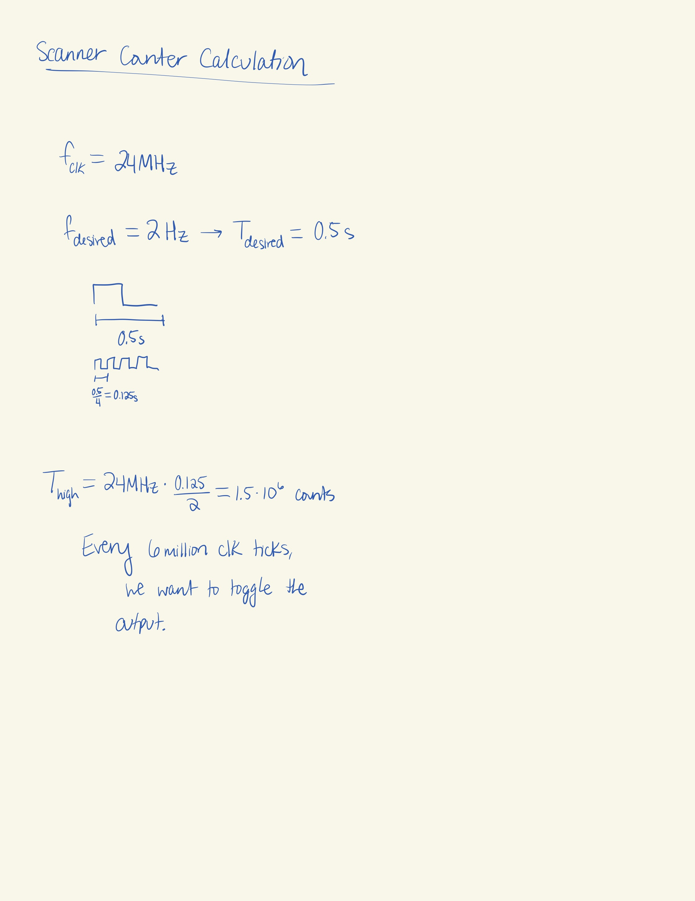
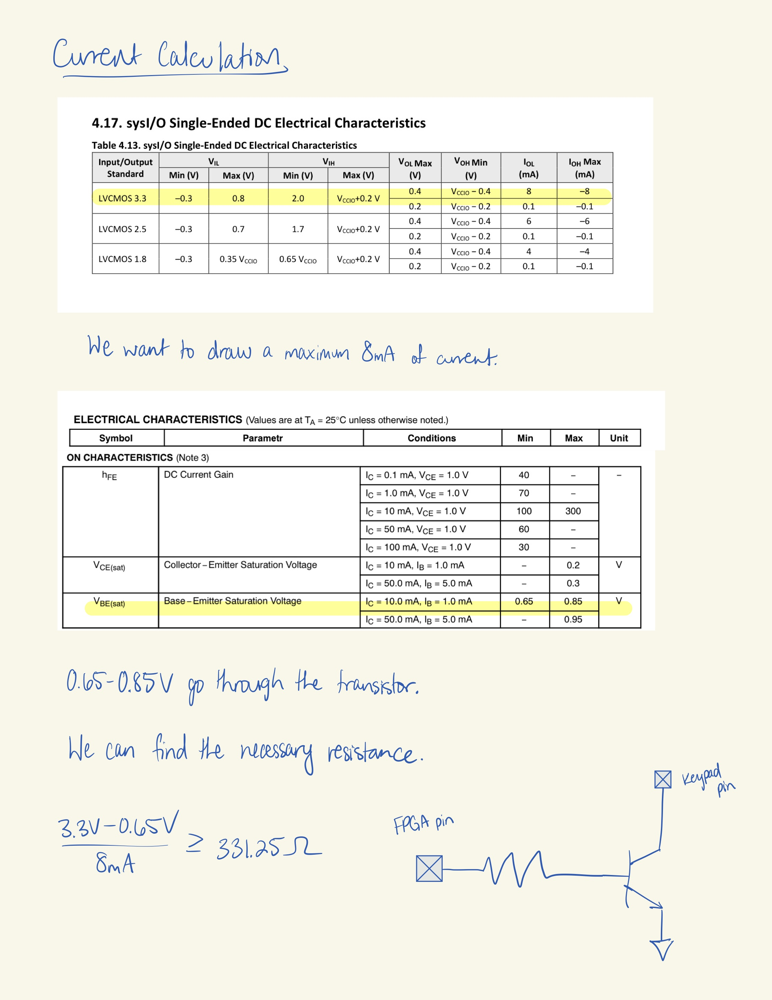
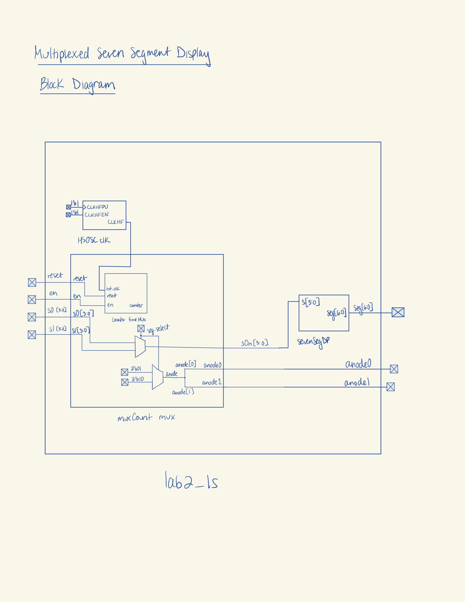
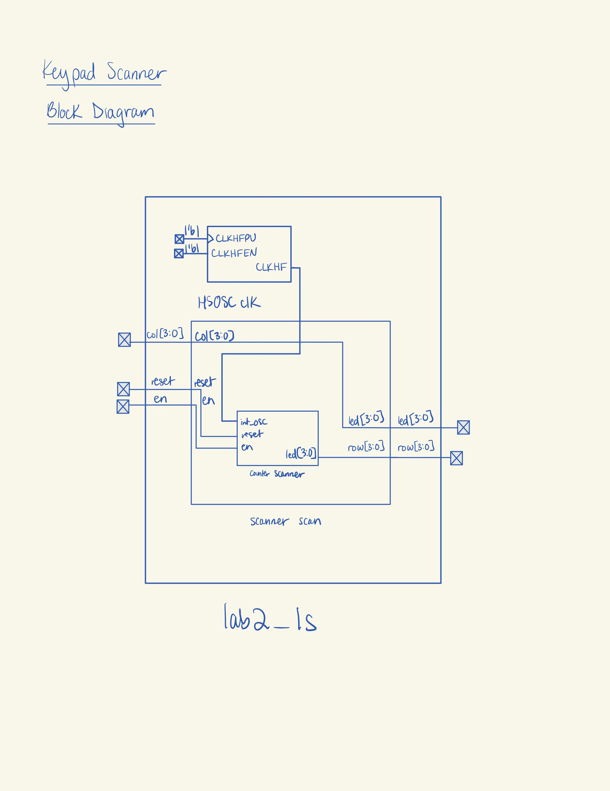
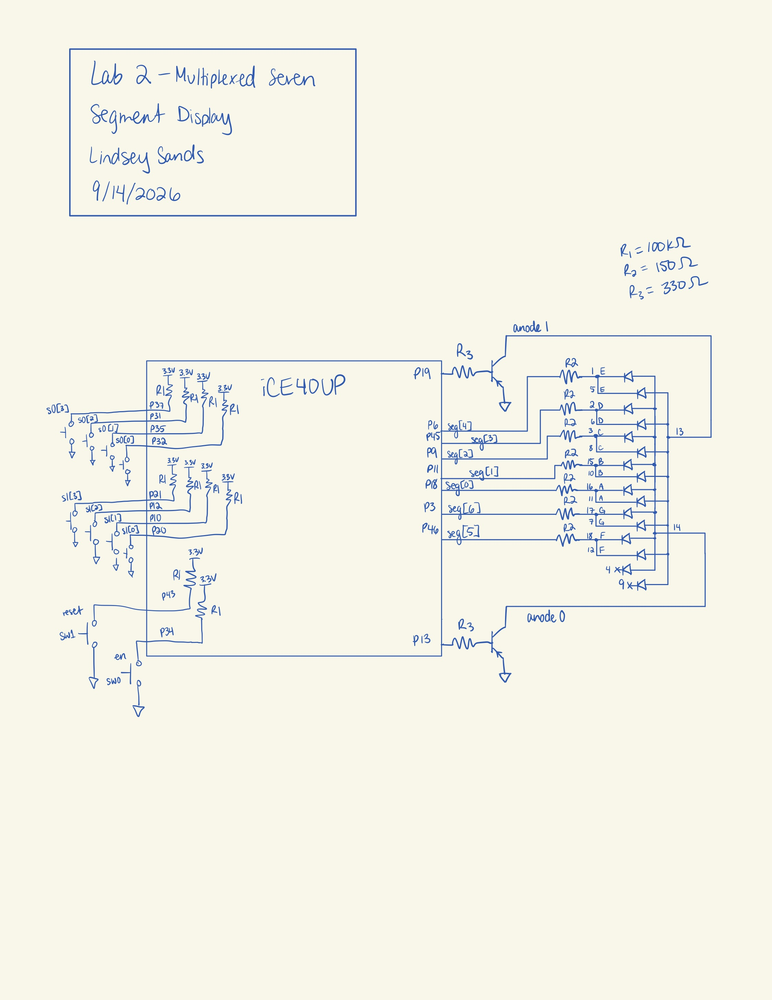
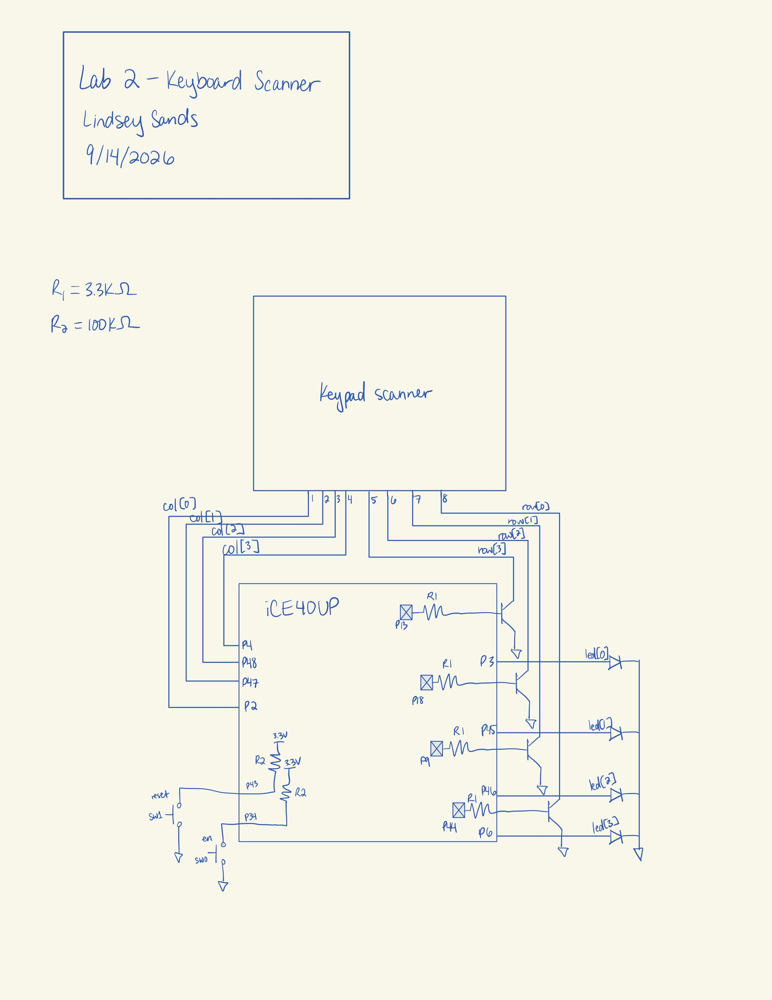
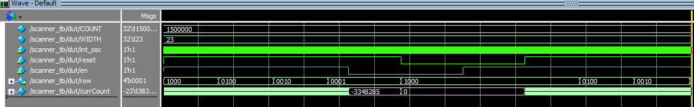
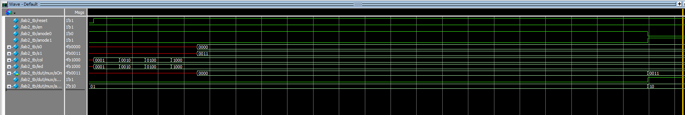

Lab 2
Introduction
In this lab, an FPGA was programmed to create multiplexer functionality for a dual seven segment display. Additionally, the FPGA was programmed to scan a keypad for pressed inputs.
Design and Testing Methodology
For both designs, a 48 MHz clock signal was generated from the on-board high-speed oscillator (HSOSC) from the iCE40 UltraPlus primitive library.
The counter module from Lab 1 was reused for both designs. For the keypad scanner, the parameters were set to width = 23 and max = 1,500,000 based on the required output frequency of 2 Hz, as calculated below.

The scanner module also has enable and reset functionality.
Additionally, there were calculations performed to figure out the proper pull-down resistor size for the transistor to draw enough current for the anodes of the seven segment display.

A standard resistor size of 300 Ω was chosen based on the calculation in Figure 2.
Due to the number of pins required, the designs are split into two different top modules and run with two different .bin files.
Technical Documentation
The source code for the project can be found in the associated Github repository.
Block Diagrams


Schematics


Results and Discussion
Testbench Simulation
All of the testbenches ran successfully with no errors.

The scanner testbench successfully demonstrates all four output transitions, enable and reset features.

The top module exercises multiplexing functionality and LED driving functionality.
Conclusion
Both the multiplexed seven segment display and keypad scanner worked!
AI Prototype Summary
I had AI generate code based on the given prompt.
// Lindsey Sands // Time-multiplex two 7-segment displays using one decoder
module seven_seg_mux ( input logic clk, input logic [3:0] input0, input logic [3:0] input1,
output logic [6:0] seg0,
output logic [6:0] seg1);
// Counter used to switch between the two displays
logic mux_select;
// Output of the single 4-bit -> 7-segment decoder
logic [6:0] decoder_out;
// Divide the clock down so the displays alternate
// at a rate fast enough for persistence of vision.
logic [19:0] counter;
always_ff @(posedge clk) begin
counter <= counter + 1'b1;
if (counter == 20'd0)
mux_select <= ~mux_select;
end
// Select which 4-bit input goes to the decoder
always_comb begin
if (mux_select)
decoder_out = seven_seg_decode(input1);
else
decoder_out = seven_seg_decode(input0);
end
// Send decoder output to the selected display.
// The other display is blanked.
always_comb begin
if (mux_select) begin
seg0 = 7'b1111111; // off (common anode)
seg1 = decoder_out;
end
else begin
seg0 = decoder_out;
seg1 = 7'b1111111; // off (common anode)
end
end
// Single 4-bit -> 7-segment decoder
function automatic logic [6:0] seven_seg_decode(input logic [3:0] value);
case (value)
4'h0: seven_seg_decode = 7'b1000000;
4'h1: seven_seg_decode = 7'b1111001;
4'h2: seven_seg_decode = 7'b0100100;
4'h3: seven_seg_decode = 7'b0110000;
4'h4: seven_seg_decode = 7'b0011001;
4'h5: seven_seg_decode = 7'b0010010;
4'h6: seven_seg_decode = 7'b0000010;
4'h7: seven_seg_decode = 7'b1111000;
4'h8: seven_seg_decode = 7'b0000000;
4'h9: seven_seg_decode = 7'b0010000;
4'hA: seven_seg_decode = 7'b0001000;
4'hB: seven_seg_decode = 7'b0000011;
4'hC: seven_seg_decode = 7'b1000110;
4'hD: seven_seg_decode = 7'b0100001;
4'hE: seven_seg_decode = 7'b0000110;
4'hF: seven_seg_decode = 7'b0001110;
default: seven_seg_decode = 7'b1111111;
endcase
endfunctionendmodule
Then, I gave it the context of my previous counter and seven segment display modules.
// Lindsey Sands // lsands@g.hmc.edu // 09-16-2026 // // Time multiplexes one seven-segment decoder between // two 4-bit inputs and two 7-bit outputs. // // The seven-segment decoder is common-anode, so: // 0 = LED segment ON // 1 = LED segment OFF // // Each display is alternately driven so that both // appear to be displaying their respective values.
module sevenSegMux #( parameter int width = 16, parameter int max = 50_000 )( input logic int_osc, input logic reset, input logic [3:0] s1, input logic [3:0] s2, output logic [6:0] seg1, output logic [6:0] seg2 );
// Counter used to control multiplexing frequency
logic [width-1:0] mux_counter;
// Selects which display is currently active
logic mux_select;
// Output of the single seven-segment decoder
logic [6:0] decoded_seg;
// Instantiate the provided counter
counter #(
.width(width),
.max(max)
) mux_counter_inst (
.int_osc(int_osc),
.reset(reset),
.en(1'b1),
.counter(mux_counter)
);
// Use the most significant counter bit to switch
// between the two displays.
assign mux_select = mux_counter[width-1];
// Select which 4-bit input goes into the decoder
logic [3:0] mux_input;
always_comb begin
if (mux_select)
mux_input = s2;
else
mux_input = s1;
end
// Instantiate the provided seven-segment decoder
sevenSegDP decoder (
.s(mux_input),
.seg(decoded_seg)
);
// Send the decoder output to the currently selected
// display and turn the other display OFF.
always_comb begin
if (!mux_select) begin
seg1 = decoded_seg;
seg2 = 7'b1111111; // all segments OFF
end
else begin
seg1 = 7'b1111111; // all segments OFF
seg2 = decoded_seg;
end
endendmodule